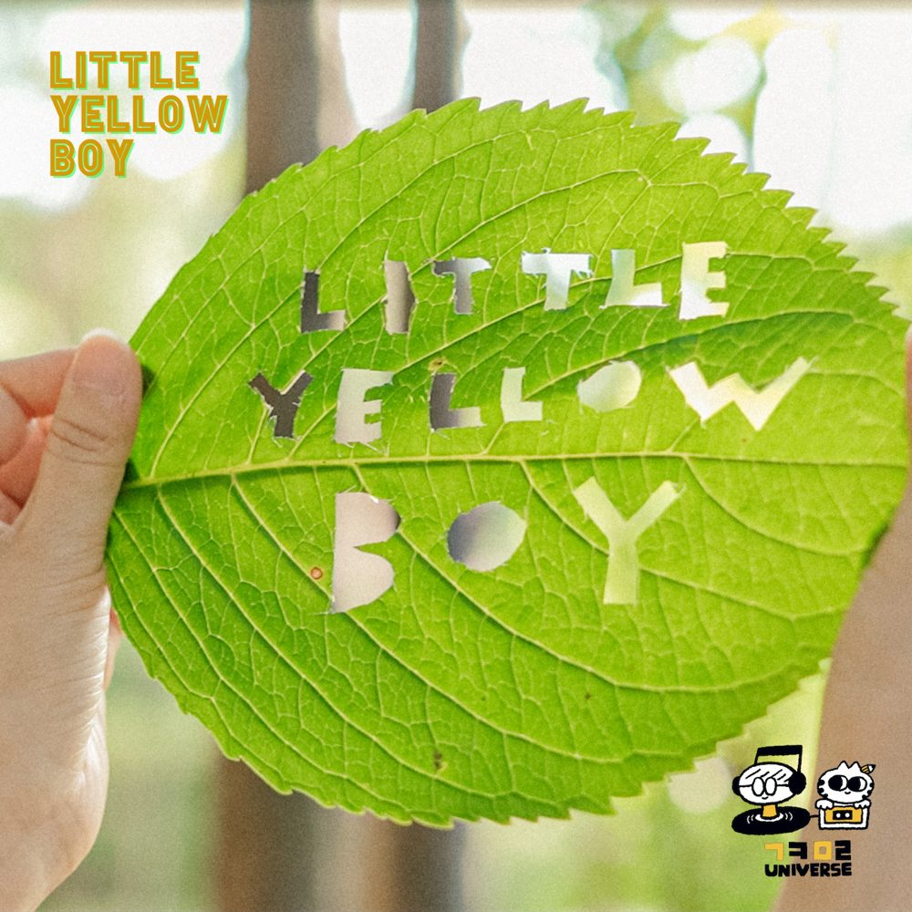

KnockOn Records2021.09.28

과카몰리 유니버스
Little Yellow Boy
GuacaMolly Universe · Feat. 제이드
Composed & Arranged, Performed & Produced by 마이마르스(MyMars), Lyrics by 야옹이버스(YaongBus), Chorus & Vocal Directed by 제이드(Jade), Mixed & Mastered by 강호정, Cover Artwork 야옹이버스, Character Design 동그란씨
- Official MV | 'Little Yellow Boy'YouTube · Music Video by 마이마르스, 야옹이버스
- YouTube Music | 'Little Yellow Boy'
- Spotify | 'Little Yellow Boy'
- 멜론 | 'Little Yellow Boy'
- Apple Music | 'Little Yellow Boy'
- 지니 | 'Little Yellow Boy'
- FLO | 'Little Yellow Boy'
- VIBE | 'Little Yellow Boy'
- 벅스 | 'Little Yellow Boy'
- Press | 뉴스인무조건 신나는 음악을 전달하고 싶은 '과카몰리 유니버스'와의 인터뷰 · 2021.10.07
- 과카몰리 유니버스 | Artistknockonrecords.com
No. 001 · ℗ · © 2021 노크온 레코드 KnockOn Records